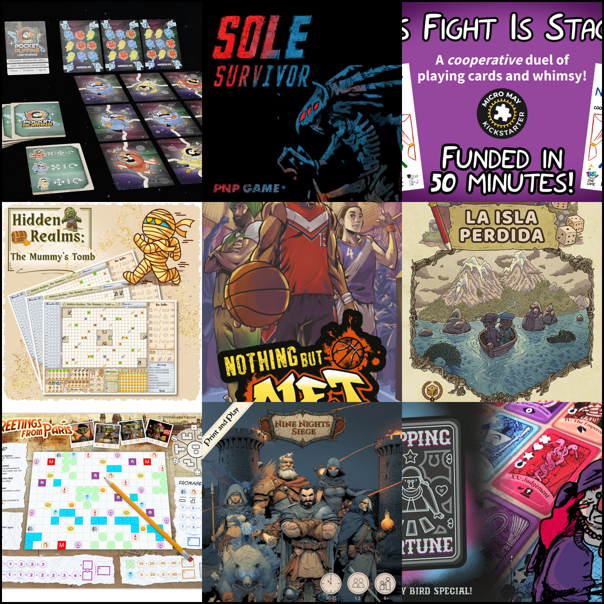

<!doctype html>
<html lang="en">
  <head>
    <meta charset="utf-8" />
    <meta name="viewport" content="width=device-width, initial-scale=1" />
    <link rel="icon" type="image/svg+xml" href="../assets/logo.svg" />
    <link rel="shortcut icon" href="../assets/logo.svg" />
    <title>18 PnP Projects Live at Once — That's a Record | PnP Launchpad</title>
    <link rel="stylesheet" href="../assets/styles.css" />
  </head>
  <body>
    <div id="app"></div>
    <script src="../assets/app.js"></script>
    <script>
      const el = document.getElementById('app');
      el.innerHTML = `
        ${PNPL.header('Blog')}
        <main>
          <article class="blog-post-card blog-post-full">
            
            <div class="blog-post-body">
              <p class="meta">Published: May 10, 2026</p>
              <h1>18 PnP Projects Live at Once — That's a Record</h1>

              <p><strong>Eighteen print-and-play crowdfunding campaigns are running right now, and that is genuinely bonkers.</strong> I've been tracking the Launchpad since early 2026, and I've never seen this many active campaigns overlap. The live rail has never been this long, the variety has never been this wide, and the pace at which new projects keep showing up has never been this fast.</p>

              <p>It started with a handful of campaigns in January and February. Then March brought a steady trickle. April accelerated things. And May? May has been a full-on flood. We went from about six live projects in early May to 18 by mid-month — a threefold increase in just two weeks. If you've been following the PnP Hideaway Facebook group's weekly megathreads, you've probably felt it too: every single week, the same handful of creators are posting, and every single week, there are more new names on the list.</p>

              <p><strong>The sheer variety is what stands out.</strong> You've got solo roll-and-writes (Pocket Puffins, The Lost Island, Greetings from Earth), competitive card games (Play With Fire, Cryptid Creek, Nothing But Net), tactical solo/co-op games (Nine Nights Siege, Iron Protocol: Exodus), party games (EFS: The Universal Voting Game, Flock and Squabble), and even a cooperative strategy game played with two decks of playing cards (This Fight Is Staged!). Kickstarter dominates the rail, but Gamefound has a solid presence too with Hidden Realms, Mïnomancer, and the new Roll 4 MORE Rum! expansion.</p>

              <p><strong>Some of these campaigns are already wrapping up.</strong> Pocket Puffins: Lost in Space ends May 14 — that's tomorrow. Sole Survivor closes May 15. This Fight Is Staged! and Hidden Realms both end May 18. If you've been sitting on the fence about any of those, the clock is ticking. The mid-May batch (Play With Fire, Cryptid Creek, Nine Nights Siege) runs through May 25–28. And the late-May wave — Shinobi Spy & Supply, Flock and Squabble, Iron Protocol: Exodus, Bee The Buzz — all end May 31, giving you a full two weeks to decide.</p>

              <p><strong>What's driving this surge?</strong> Part of it is seasonal — spring is traditionally a big crowdfunding month for board games. But I think there's something more going on too. The PnP model has clearly found its footing. Designers are realizing they can test mechanics, build an audience, and fund production all through print-and-play campaigns without needing a factory or a warehouse. The $3–$10 PnP pledge tiers are low-risk for backers and low-friction for creators. And platforms like Kickstarter and Gamefound have made it easier than ever to set up a campaign in a weekend.</p>

              <p><strong>The Launchpad itself has grown with it.</strong> We started with a handful of projects and a simple layout. Now we're tracking 18 simultaneous campaigns, maintaining designer and publisher profiles, running a blog, and building a watchlist system — all from a single JSON file and a static site. The infrastructure is holding up, and the data model is flexible enough to handle whatever comes next.</p>

              <p><strong>Here's the full live rail, sorted by end date:</strong></p>

              <p>
                <a href="https://www.kickstarter.com/projects/pocket-puffins/pocket-puffins-lost-in-space-18-card-solo-space-puzzle">Pocket Puffins: Lost in Space</a> (ends May 14) ·
                <a href="https://www.kickstarter.com/projects/papertigers/sole-survivor-0">Sole Survivor</a> (ends May 15) ·
                <a href="https://www.kickstarter.com/projects/jamiesabriel/this-fight-is-staged-challenges-expansion">This Fight Is Staged! Challenges Expansion</a> (ends May 18) ·
                <a href="https://gamefound.com/en/projects/tabletop-for-world/hidden-realms-the-mummys-tomb">Hidden Realms: The Mummy's Tomb</a> (ends May 18) ·
                <a href="https://www.kickstarter.com/projects/hp1/nothing-but-net-2-player-head-to-head-basketball-card-game">Nothing But Net</a> (ends May 20) ·
                <a href="https://www.kickstarter.com/projects/mikegnade/the-lost-island-secret-valley?ref=bggforums">The Lost Island + The Secret Valley</a> (ends May 23) ·
                <a href="https://www.kickstarter.com/projects/1617006368/greetings-from-earth-a-roll-and-write-outa-world-tour">Greetings from Earth</a> (ends May 23) ·
                <a href="https://www.kickstarter.com/projects/lanternling/nine-nights-siege">Nine Nights Siege</a> (ends May 25) ·
                <a href="https://www.kickstarter.com/projects/herrgoldberg/flipping-fortune">Flipping Fortune</a> (ends May 26) ·
                <a href="https://www.kickstarter.com/projects/umbrapublishing/play-with-fire-the-card-game">Play With Fire - The Card Game</a> (ends May 26) ·
                <a href="https://www.kickstarter.com/projects/mayhemdelight/cryptid-creek-build-a-legend">Cryptid Creek: Build a Legend</a> (ends May 28) ·
                <a href="https://www.kickstarter.com/projects/orcaislandgames/shinobi-spy-and-supply">Shinobi Spy & Supply</a> (ends May 31) ·
                <a href="https://www.kickstarter.com/projects/tholen/flock-and-squabble">Flock and Squabble</a> (ends May 31) ·
                <a href="https://www.kickstarter.com/projects/nukazombee/iron-protocol-exodus?ref=4ftgv4">Iron Protocol: Exodus</a> (ends May 31) ·
                <a href="https://www.kickstarter.com/projects/edugamingcollective/bee-the-buzz">Bee The Buzz</a> (ends May 31) ·
                <a href="https://www.kickstarter.com/projects/ex1stgames/efs-the-universal-voting-game">EFS: The Universal Voting Game</a> (ends June 4) ·
                <a href="https://www.kickstarter.com/projects/dozensofus/midtown-mall-solo-roll-and-write-collection/posts">Midtown Mall</a> (ends June 6) ·
                <a href="https://gamefound.com/en/projects/beaverlicious-games/minomancer---the-roll--write-dungeon-crawler-dynamic-pnp-of-the-month--gamebook">Mïnomancer - Roll em Bones!</a> (no end date)
              </p>

              <p><strong>Bottom line:</strong> 18 live campaigns is a lot. It's a lot for the creators, a lot for the backers, and it's a lot for the Launchpad to track. But it's also a sign that the print-and-play ecosystem is thriving. Designers are making games, backers are finding them, and the whole pipeline is working. If you're a PnP designer and you've been thinking about launching a campaign, this is the moment. The audience is here, the platforms are ready, and the momentum is real.</p>

              <p><a href="index.html">Back to Blog</a></p>
            </div>
          </article>
        </main>
        ${PNPL.footer()}
      `;
      PNPL.setMainLinksNewTab();
    </script>
  </body>
</html>
